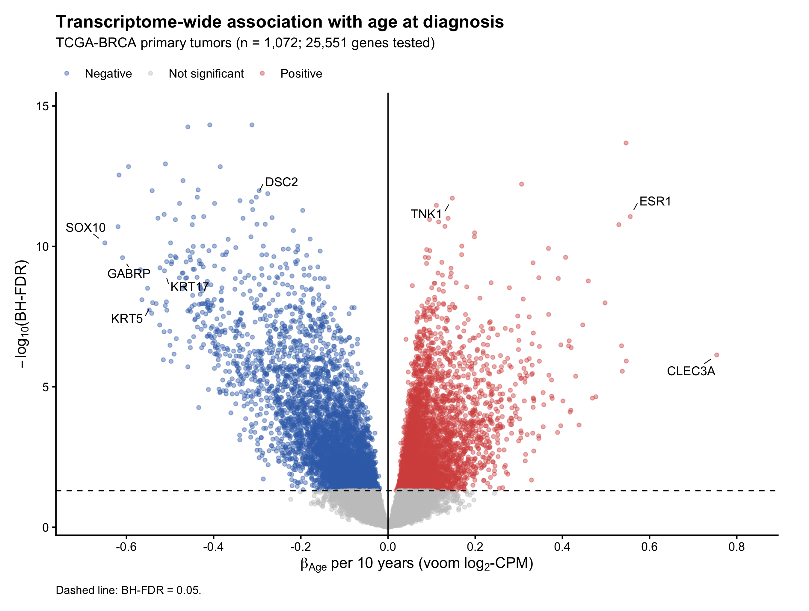
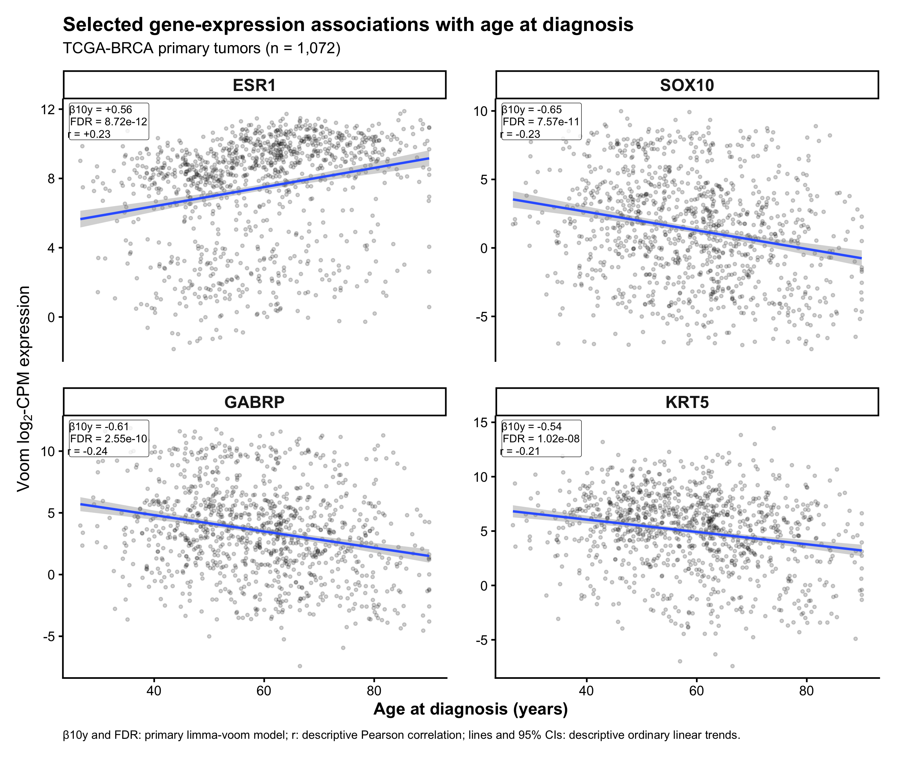
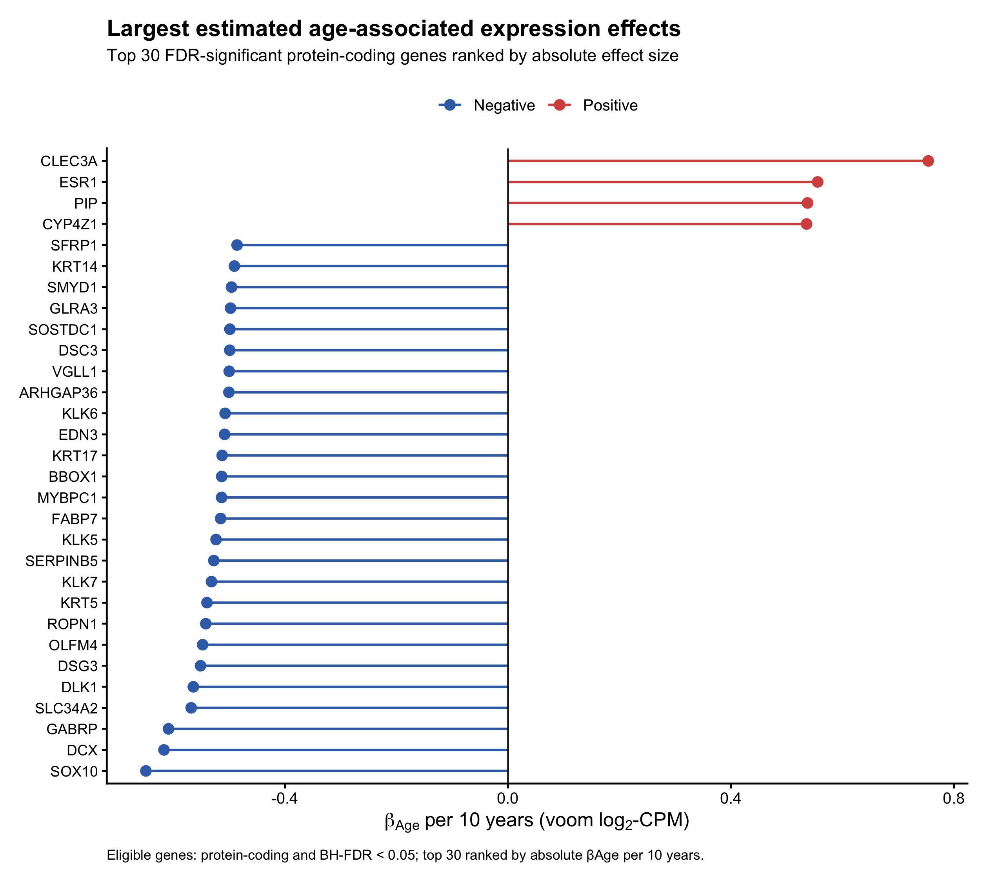
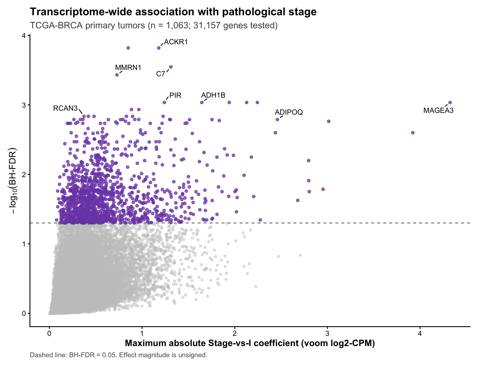
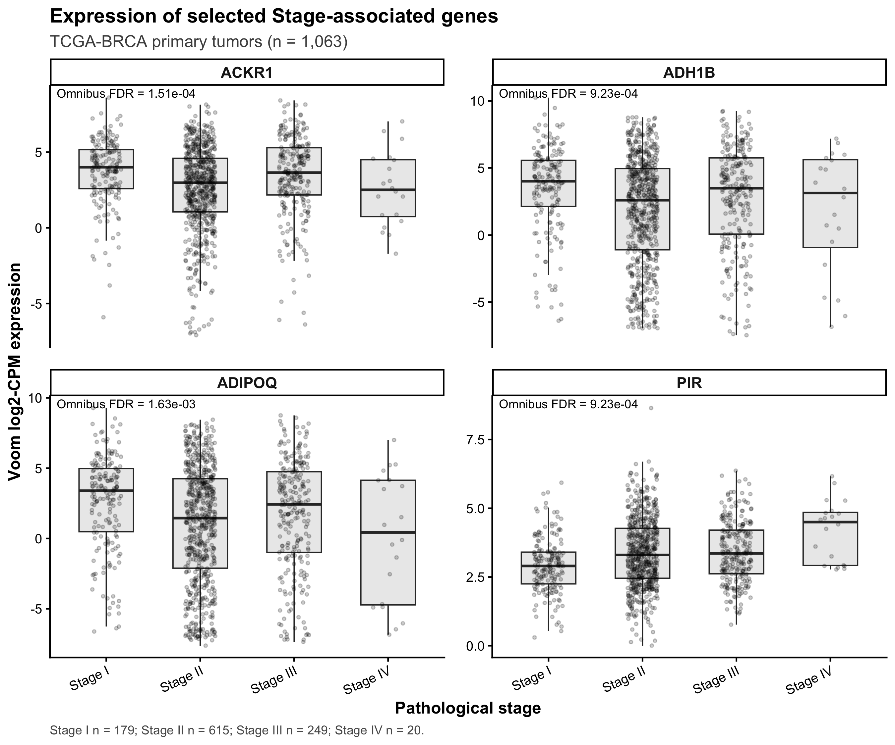
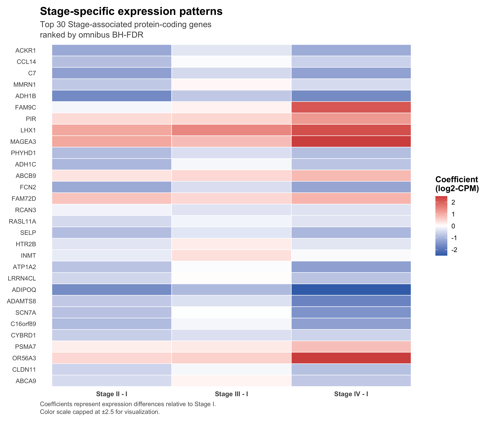
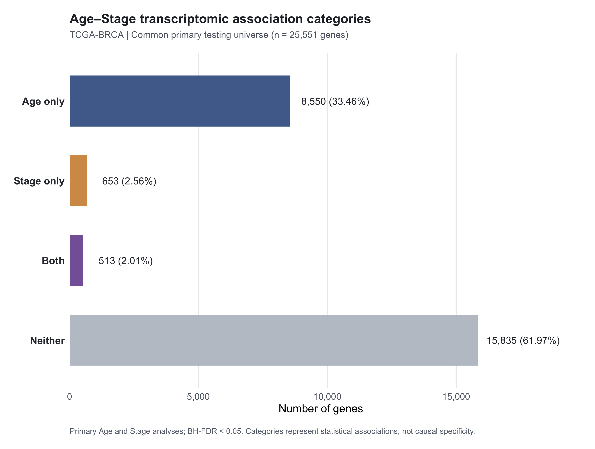
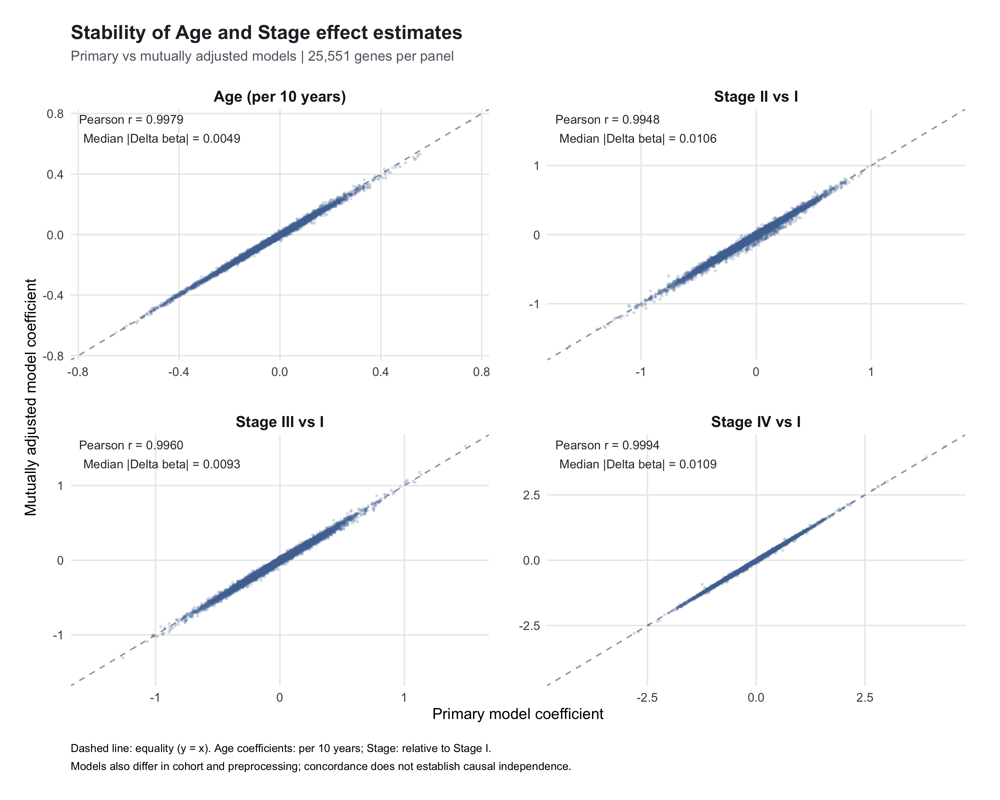
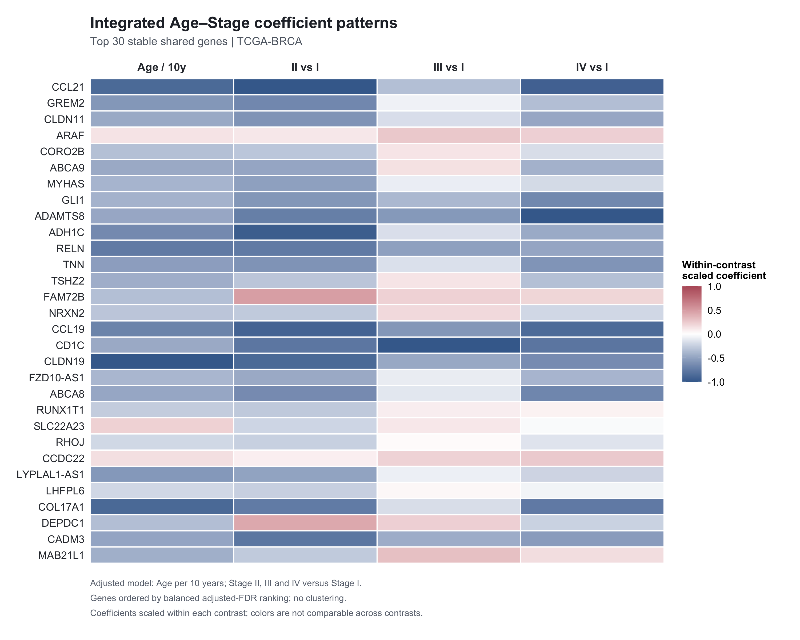

Read the legends and final validation together. The panels are historical analytical outputs, not new external validation.

Primary Age model, 1,072 tumors and 25,551 tested genes. The horizontal axis is the age coefficient per decade; the vertical axis is minus log10 BH-FDR. The dashed line marks 0.05. This is an association display, not a causal ageing effect.

ESR1, SOX10, GABRP and KRT5 are displayed as descriptive examples from the discovery analysis. Points are unlabeled cohort observations. Ordinary regression trends, their shaded 95% confidence bands and Pearson correlations are descriptive; weighted model coefficients and FDR annotations belong to the primary limma analysis. This is not independent validation.

Thirty significant protein-coding genes with the largest absolute Age coefficients are displayed in log2 expression units per decade. This effect-size illustration is distinct from the historical shared 30-gene panel in Figure 9. Significance was established over the full Age testing family before visualization.

Primary Stage model, 1,063 tumors and 31,157 tested genes. The vertical axis reports omnibus BH-FDR; the horizontal axis shows the maximum absolute non-reference Stage coefficient. That magnitude summary supplies no single omnibus direction and does not make a nonsignificant pairwise contrast significant.

ACKR1, ADH1B, ADIPOQ and PIR illustrate expression distributions across Stages I-IV. Group sizes are 179, 615, 249 and 20. Individual points are unlabeled. Patterns are descriptive, and sparse Stage IV limits precision. Formal inference uses the model-specific omnibus or separately corrected contrasts.

Thirty selected protein-coding genes from the primary Stage omnibus analysis are shown using II/I, III/I and IV/I coefficients. The symmetric color cap is approximately +/-2.5 log2 units. These are raw coefficients, not row-standardized profiles and not the within-column scaling used in Figure 9. An omnibus-selected row does not imply significance in every displayed contrast.

Within the common 25,551-gene universe, original-family FDR defines Age only (8,550), Stage only (653), Both (513) and Neither (15,835). These categories describe primary analyses with different eligible cohorts. A shared category is not a mechanistic interaction or an independently tested biomarker class.

Coefficients are compared within the matched 25,551-gene integration universe. The saved figure reports Pearson r of 0.9979, 0.9948, 0.9960 and 0.9994 for Age per decade, II/I, III/I and IV/I; corresponding median absolute changes are 0.0049, 0.0106, 0.0093 and 0.0109. Cohort and preprocessing differ between primary and Joint models, so changes do not isolate adjustment. Global correlation does not establish candidate-specific contrast robustness. Exact metrics accompany the figure in the saved CSV.

Thirty genes were ranked from the 418 primary Both genes retaining both associations in the Joint model, using the worse Joint FDR rank, then rank sum and Ensembl ID. Rows display Joint Age and Stage coefficients. Each column is divided by its own maximum absolute coefficient among these genes; colors are not quantitatively comparable across columns. The archived title stable is selection-specific. The historical panel is distinct from the later exploratory 12 genes and is scientifically QUALIFIED under final V4; Stage omnibus significance does not establish significant or robust Stage IV/II or IV/III differences.